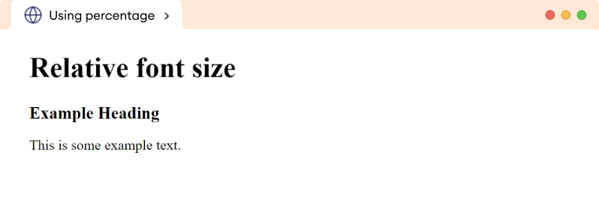
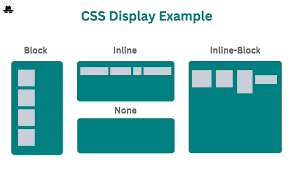
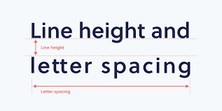

CSS: Diseño y Estilos
CSS (Cascading Style Sheets) es un lenguaje utilizado para definir el estilo y diseño de las páginas web. Permite mejorar la apariencia y la experiencia del usuario.

CSS (Cascading Style Sheets) es un lenguaje utilizado para definir el estilo y diseño de las páginas web. Permite mejorar la apariencia y la experiencia del usuario.
JavaScript es un lenguaje de programación esencial para la web, ya que permite la creación de contenido dinámico, interacción con el usuario y mejora la funcionalidad de las páginas web.

Esta contiene informacion sobre los atributos de CSS
| Nombre del atributo | Descripcion | Propiedades | Valores posibles | Ejemplos de uso | Imagen representativa | Fuente |
|---|---|---|---|---|---|---|
| font-size | Define el tamaño del texto. | Texto | px, pt, cm, mm, %, em, rem, vw, vh | p { font-size: 16px;} |  | link |
| border-radius | Redondea las esquinas de un elemento. | Bordes | px, % | div { border-radius: 15px; } | link | |
| display | Define cómo se muestra un elemento en la página. | Diseño | block, inline, flex, grid, none | span { display: block; } |  | link |
| flexbox (display: flex;) | Organiza elementos en un contenedor flexible. | Diseño | flex-start, center, space-between | .container { display: flex; justify-content: center; } | link | |
| position | Define la posición de un elemento. | Ubicación | static, relative, absolute, fixed, sticky | .box { position: absolute; top: 50px; left: 50px; } | link | |
| box-shadow | Aplica una sombra a un elemento. | Sombra | none, 10px 10px 20px rgba(0,0,0,0.5) | .shadow-box { box-shadow: 10px 10px 20px rgba(0,0,0,0.5); } | link | |
| overflow | Controla cómo se maneja el contenido que excede el tamaño de un contenedor. | Contenido | visible, hidden, scroll, auto | .content { overflow: scroll; } | link | |
| z-index | Controla la superposición de elementos. | Capas | Número entero (0, 1, 100, -1) | .element { z-index: 10; } | link | |
| opacity | Define la transparencia de un elemento. | Transparencia | 0 (transparente) a 1 (opaco) | .image { opacity: 0.5; } | link | |
| margin y padding | Controla el espacio fuera (margin) y dentro (padding) de un elemento. | Espaciado | px, %, auto | .box { margin: 10px; padding: 15px; } | link | |
| text-align | Alinea el texto dentro de un elemento. | Texto | left, right, center, justify | p { text-align: center; } | link | |
| line-height | Ajusta la altura de las líneas de texto. | Texto | normal, número, px, em, % | p { line-height: 1.5; } | link | |
| white-space | Controla cómo se manejan los espacios en blanco dentro de un elemento. | Texto | normal, nowrap, pre, pre-line, pre-wrap | div { white-space: nowrap; } | link | |
| letter-spacing | Ajusta el espacio entre letras en un texto. | Texto | normal, px, em | h1 { letter-spacing: 2px; } |  | link |